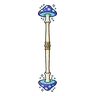

หมอมอร์โรว์
มอนธาตุพิษ Lv 38–38 · บอสเนื้อเรื่อง
เจอที่
| แมพ | โซน | Lv | ภูมิภาค |
|---|---|---|---|
| เนินสุสานโบสถ์ร้าง | 38–38 | ป่ากองไฟ |
ค่าสถานะตามเลเวล
| Lv | HP | ATK | DEF | MDEF | EXP | Job |
|---|---|---|---|---|---|---|
| 38 | 155,904 | 104–155 | 18 | 13 | 1,166 | 875 |
ตีด้วยธาตุไหนดี
แรงขึ้น: —
เบาลง: มืด ×0.5 อมตะ ×0.5 พิษ ×0
วัตถุดิบที่ดรอป
—
อุปกรณ์ที่ดรอป (1)
| ของ | โอกาส |
|---|---|
 ไม้พลองเห็ดราชาคู่ | 0.5% |